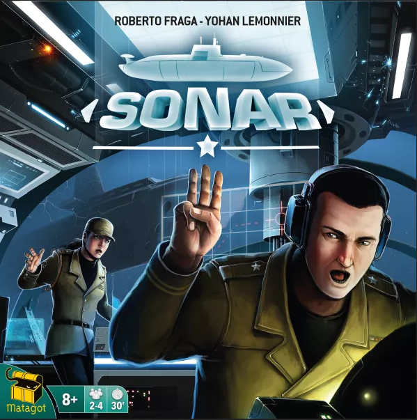

Battleship
Captain Sonar
 Best in show! Try to find and sync the enemy submarine in real time. Best played with 8 people, two teams of 4
At the bottom of the ocean, no one will hear you scream!
In Captain Sonar, you and your teammates control a state-of-the-art submarine and are trying to locate an enemy submarine in order to blow it out of the water before they can do the same to you. Every role is important, and the confrontation is merciless. Be organized and communicate because a captain is nothing without his crew: the Chief Mate, the Radio Operator, and the Engineer.
All the members of a team sit on one side of the table, and they each take a particular role on the submarine, with the division of labor for these roles being dependent on the number of players in the game: One player might be the captain, who is responsible for moving the submarine and announcing some details of this movement; another player is manning the sonar in order to listen to the opposing captain's orders and try to decipher where that sub might be in the water; a third player might be working in the munitions room to prepare torpedoes, mines and other devices that will allow for combat.
Captain Sonar can be played in two modes: turn-by-turn or simultaneous. In the latter set-up, all the members of a team take their actions simultaneously while trying to track what the opponents are doing, too. When a captain is ready to launch an attack, the action pauses for a moment to see whether a hit has been recorded — then play resumes with the target having snuck away while the attacker paused or with bits of metal now scattered across the ocean floor.
Multiple maps are included with varying levels of difficulty.
Best in show! Try to find and sync the enemy submarine in real time. Best played with 8 people, two teams of 4
At the bottom of the ocean, no one will hear you scream!
In Captain Sonar, you and your teammates control a state-of-the-art submarine and are trying to locate an enemy submarine in order to blow it out of the water before they can do the same to you. Every role is important, and the confrontation is merciless. Be organized and communicate because a captain is nothing without his crew: the Chief Mate, the Radio Operator, and the Engineer.
All the members of a team sit on one side of the table, and they each take a particular role on the submarine, with the division of labor for these roles being dependent on the number of players in the game: One player might be the captain, who is responsible for moving the submarine and announcing some details of this movement; another player is manning the sonar in order to listen to the opposing captain's orders and try to decipher where that sub might be in the water; a third player might be working in the munitions room to prepare torpedoes, mines and other devices that will allow for combat.
Captain Sonar can be played in two modes: turn-by-turn or simultaneous. In the latter set-up, all the members of a team take their actions simultaneously while trying to track what the opponents are doing, too. When a captain is ready to launch an attack, the action pauses for a moment to see whether a hit has been recorded — then play resumes with the target having snuck away while the attacker paused or with bits of metal now scattered across the ocean floor.
Multiple maps are included with varying levels of difficulty.
Sonar

A slimmed down version of Captain Sonar that turns the game from real time to turn based. Best if you can't meet the full 8 players of Captain Sonar.
Time for an underwater game of cat-and-mouse, with each of the two teams in Sonar competing to be the first to deal two points of damage to the other. Do that, and you win the game instantly.
In detail, Sonar includes four pairs of maps, and each team takes the same maps in their color. A team can be one or two players, and with two players on a team, each player takes a different role: Captain or Radio Operator. (A one-person team handles both roles.) A divider separates the teams, and each Captain marks their starting location on the map.
On a turn, the Captain calls out an action, typically moving their sub one space north, south, east, or west. When they do this, they call out a direction, mark their new location, and add one energy to their ship's register. The Radio Operator on the other team notes the movement of this sub on a plastic sheet, and through deduction and trial-and-error tries to determine exactly where the opposing sub might be on the map.
Instead of moving, a Captain can also:
Use sonar: Erase two energy from your register; the opposing team must reveal their row or column.
Go silent: Erase three energy from your register; move your sub, but don't gain energy and don't tell the opponents which direction you're moving.
Fire a torpedo: Erase four energy from your register; call out coordinates in your quadrant (e.g., F6); if the opponents are on that space, they take a point of damage.
Surface: Announce your location to the opposing team, then erase your previous path on your map; you can't cross your own path during the game, so sometimes you need to surface in order not to box yourself in.
You can have at most four energy in reserve, so you need to manage movement and the other actions carefully so that you'll be able to fire at the opponents once you know where they are — ideally without being torpedoed in response!